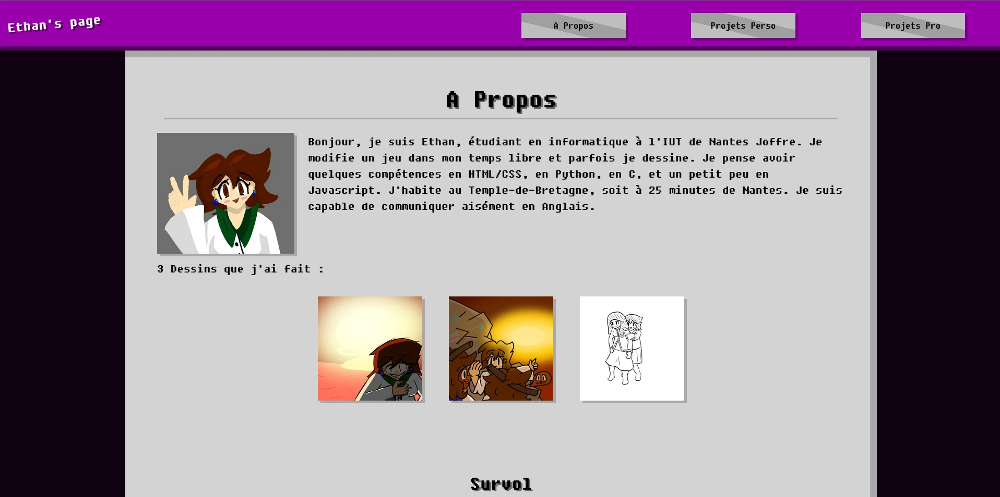
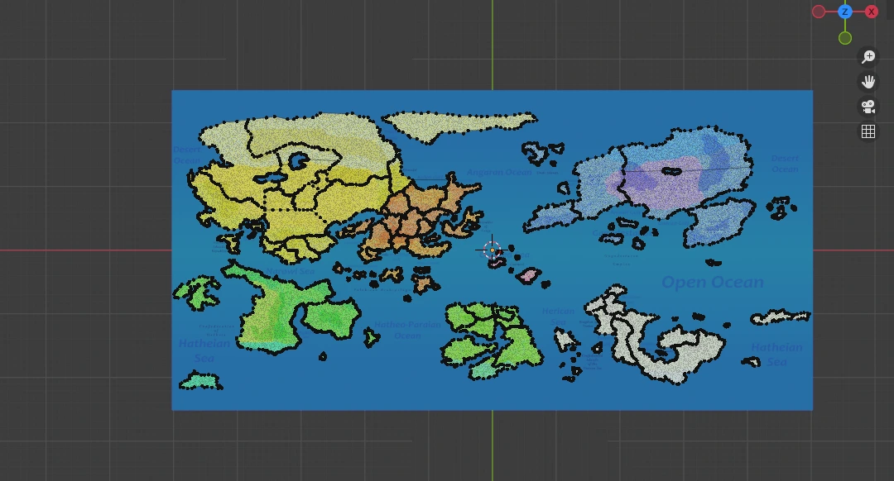
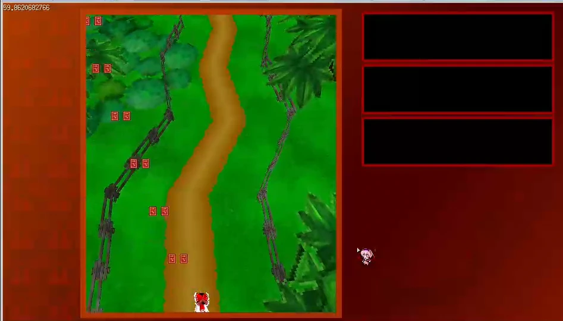
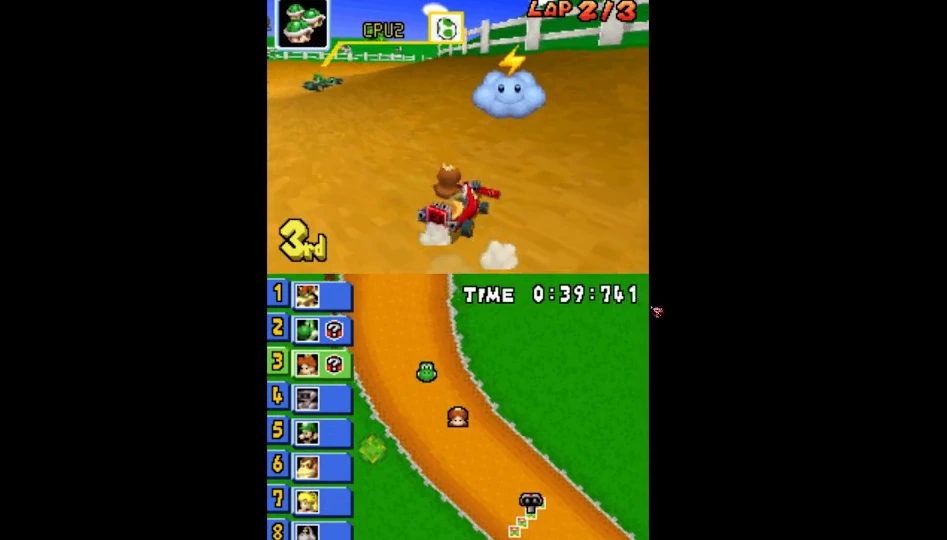
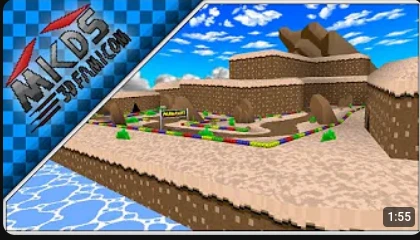
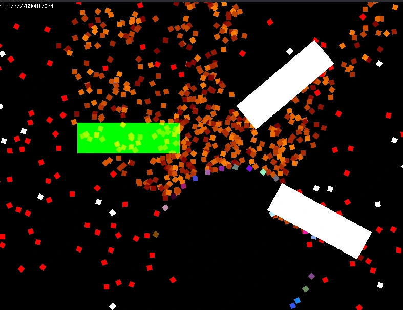
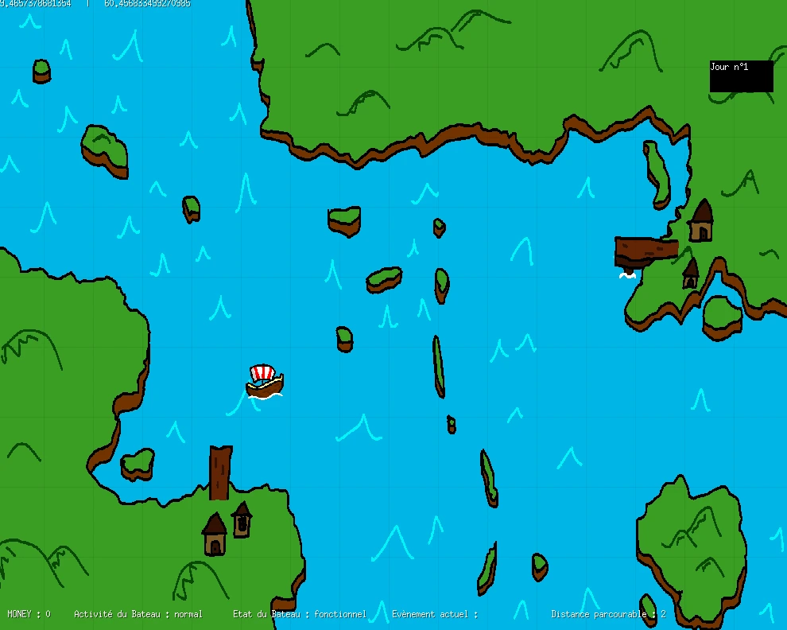
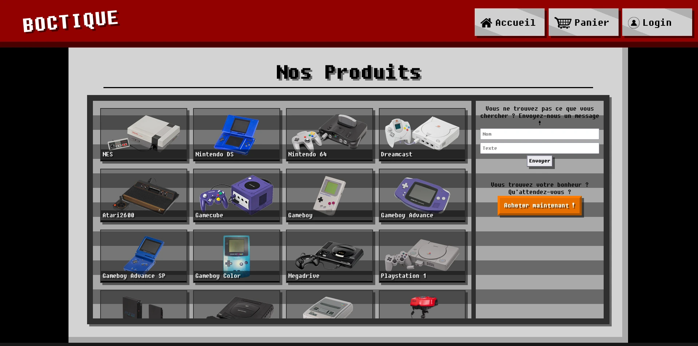

Description
 Ici se trouve la liste non-exhaustive des projets personnels que je planifie de faire un jour... enfin ça depend.
Ici se trouve la liste non-exhaustive des projets personnels que je planifie de faire un jour... enfin ça depend.
La liste des projets personnels disponibles en ligne se trouve sur mon compte Youtube
bien que ça ne relève quasiment que du modding Mario Kart DS
Se trouve aussi en bas la liste des projets académiques que j'ai fait.
Projets Personnels Actuels
| Current Plans | Image | Description | Last Updated |
|---|---|---|---|
| This Page |  |
C'est une page personnel à but de portfolio | June 2026 |
| GeoJSON Blender Plugin |  |
Addon Blender permettant de créer des GeoJSONs contenant des cartes + ou - fictives. | May 2026 |
| Touhou Fangame |  |
Fangame de Touhou Project, un bullet hell, fait en Golang avec les libraires Ebitengine et Tetra3d | April 2026 |
| Chomp ASM | Image Not Found | Modification du code de Mario Kart DS visant à recréer l'objet Chomp de Mario Kart Double Dash | September 2025 |
| Thunder ASM |  |
Modification du code de Mario Kart DS viasant à ajouter le nuage orageux de Mario Kart Wii | August 2025 |
| Mario Kart DS 3d Famicom |  |
Modification de Mario Kart DS visant à recréer toutes les course de Super Mario Kart en 3 Dimensions | 2022 |
Projets Academiques
| Projects | Image | Description | Last Updated |
|---|---|---|---|
| Projet Particules |  |
Projet implémentant diverses fonctions + ou - modifiables visant à afficher des particules | December 2025 |
| Projet PSON ! |  |
Projet qui recrée certaines fonctions de l'économie dans un pasage Viking | January 2026 |
| Site HTML "Boutique" en Devoir Maison |  |
Site HTML ressemblant à l'interface d'une boutique de jeux rétros | November 2025 |